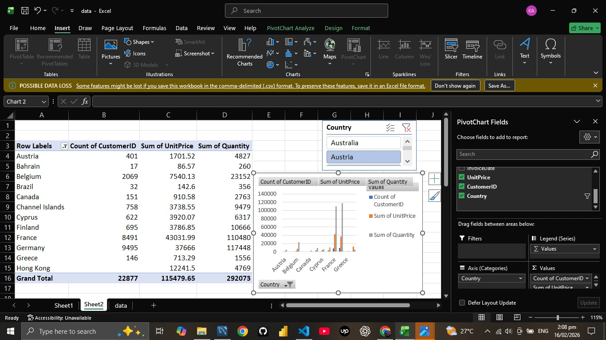
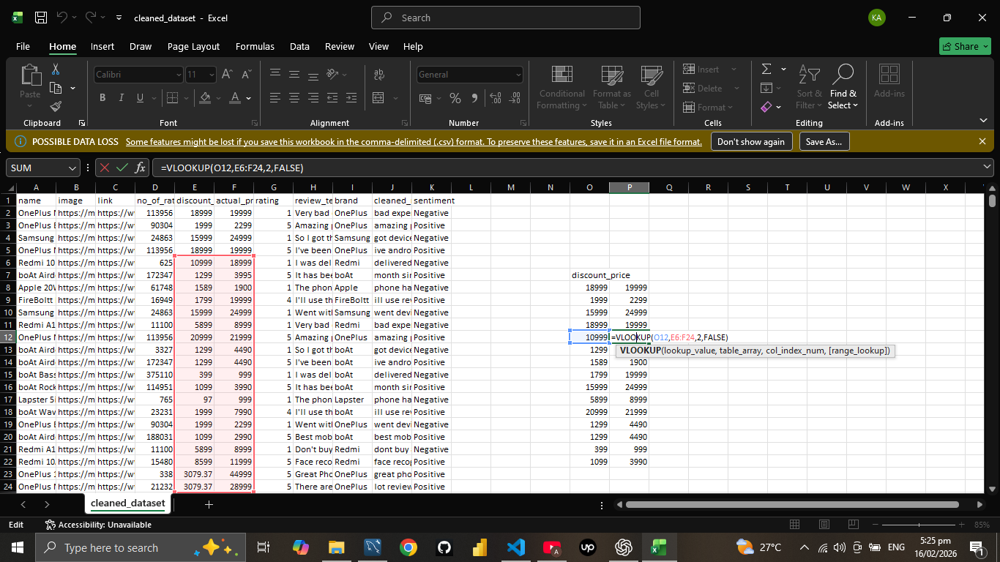
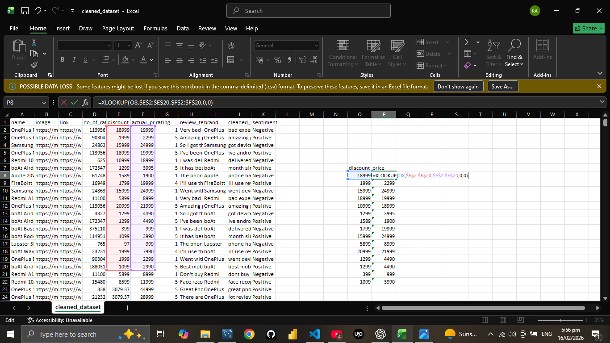

Project Overview
This project demonstrates advanced Excel techniques for data analysis, including pivot tables, XLOOKUP, and data cleaning. The goal is to turn raw data into actionable reports and dashboards.
Features
- Pivot Table Summaries
- XLOOKUP for Data Retrieval
- Automated Data Cleaning
- Interactive Dashboards



